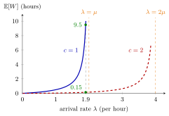

M/M/c Queue¶
Definition¶
The queue has Poisson arrivals with rate , identical servers whose service times are independent and exponential with rate , one shared queue and unlimited waiting room. It is the birth-death queue with
and its load is . If , the stationary probabilities are
so that for and for .
Interpretation¶
Several servers share one queue. The service capacity grows with the number of jobs present until all servers are busy; from then on the queue empties at the constant rate , just like an queue with a fast server.

The figure compares Riley's ovens of Example 1, each with rate per hour. With one oven explodes as approaches ; with two it stays small until comes close to . At the mean wait drops from hours to hours, far more than the factor two a naive guess would give.
The rate comes from the minimum of independent exponentials: with jobs in service the next completion occurs at rate , and at most servers can work. The condition , that is, , makes the tail of geometric with ratio and the normalizing sum finite; must exceed , not merely equal it.
Two slips are frequent. The mean number of busy servers is , not ; is the fraction of time a single server is busy. And the Poisson-like term holds only for ; beyond each step multiplies by .
Key Results¶
- Load and stability: (equation 5.1.6a).
- and as in the Definition (equations 5.1.6b and 5.1.6c of Exercise 5.1.9).
- Mean queue length (equation 5.1.6d): .
- Mean number in service: , which also follows from Little's law applied to the servers.
- , and ; for all formulas reduce to those of the queue (Exercise 5.1.10).
- By PASTA, the probability that an arriving job has to wait is .
- Whether one fast server beats several slow ones depends on the objective (True/False 5.2.2); Example 1 shows the trade-off.
Examples¶
1. Two ovens (Section 5.2). Riley has jobs per hour and ovens of rate . With , and , so
Then hours and , against hours and jobs with one oven (True/False 5.2.5: the reduction is much more than a factor two). Compare one fast oven of rate , an queue with the same : hours but hours, while the two slow ovens give hours. Two slow servers make jobs wait less; one fast server gets them out sooner.
2. The tool crib (True/False 5.2.3). Mechanics arrive at per hour and service takes 4 minutes, so per hour and . One employee gives : the queue is not rate stable. With , , and
A third employee () brings down to about minutes. With two employees, on average are busy; the load is the busy fraction of each.
3. Where the factorial stops (True/False 5.1.5). For , and , the formula would give . The correct step from state 2 to 3 is , because only two servers can work. The factorial form holds for only.
Prerequisites¶
Related Concepts¶
- Erlang B Model
- M/M/Infinity Queue
- M/M/1/K Queue
- Finite Calling Population
- Server Load
- Sakasegawa's Formula
- Open Queueing Network
Sources¶
- Stochastic Operations Research · Week 4
- N. D. van Foreest, Sample Path Analysis and Simulation of Stochastic Systems, Sections 5.1 and 5.2
Aliases: M/M/c, multi-server Markovian queue, M/M/s queue, Erlang C model, multi-server queue with Poisson arrivals and exponential service Keywords: \mu(n) = \mu\min{n,c}, \rho = \lambda/(c\mu), \mathbb{E}[L_s] = \lambda/\mu, G = 1/p(0), number of servers, busy servers, pooling, server planning Symbols: lambda, mu, product, rho, sum
Last updated: 29 October 2026 20:42
M/M/c QueueErlang B ModelSakasegawa's FormulaBirth-Death QueueM/M/1 QueueLittle's LawMinimum of Independent ExponentialsM/M/Infinity QueueM/M/1/K QueueFinite Calling PopulationServer LoadOpen Queueing Network